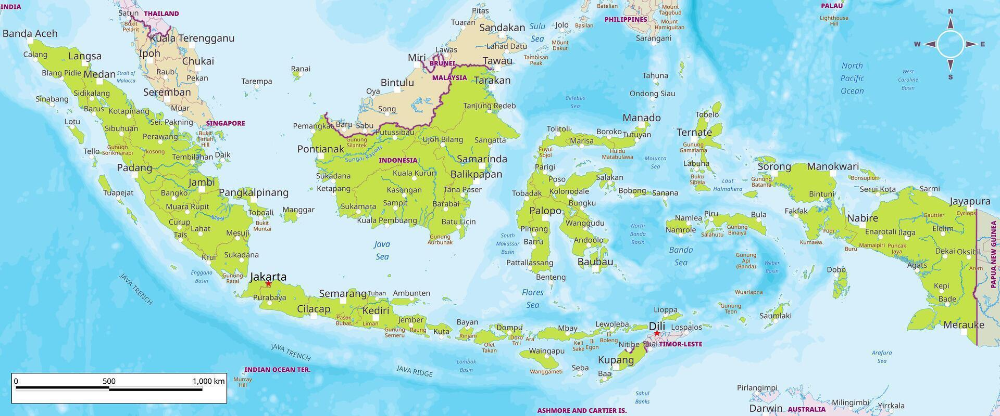

Klik salah satu nomor pada peta untuk menjelajahi kekayaan budaya provinsi tersebut.
Klik nomor 1 pada peta untuk melihat profil keberagaman lengkap provinsi.

🗺️ Keterangan
Belum dijelajahi
Sudah dijelajahi
Total: 38 provinsi
map-indonesia.jpg tidak ditemukan — peta placeholder dipakai.
Nomor 1–38 tetap bisa diklik. Letakkan file map-indonesia.jpg di folder yang sama agar tampil peta asli.
Tips: Klik nomor 1–38 pada peta. Setiap provinsi menampilkan 6 tab informasi: suku, bahasa, agama, budaya, kuliner, dan tradisi.
15 soal acak dari bank soal — kombinasimu unik! 🎲
Mode tamu — tersimpan lokal di browser.